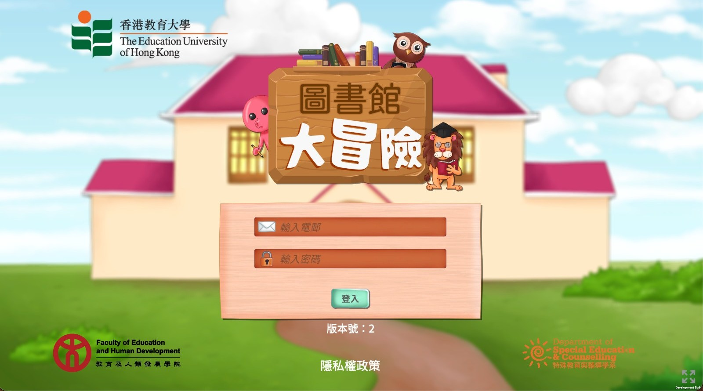

InnoTech for SEN Students
Library Big Adventure — an educational mini-game platform for SEN students at EdUHK.

What is this project?
InnoTech for SEN Students (圖書館大冒險 — Library Big Adventure) is an existing Unity educational application built for special educational needs (SEN) students, developed for The Education University of Hong Kong Faculty of Education and Human Development. The platform contains multiple educational mini-games, daily quests, character creation, and progression systems — originally oriented toward native/mobile deployment before being converted for browser delivery.
What I contributed
App-to-WebGL migration
- Migrated the existing Unity project toward a WebGL-compatible build configuration.
- Changed the Unity editor/project version and package configuration to produce successful WebGL builds.
- Resolved project-opening, dependency, plug-in, and compilation errors caused by mobile/iOS-oriented packages and APIs.
- Added and configured a WebGL build template — browser page styling, branding assets, icon, background, and project settings.
- Disabled or replaced code paths and unsupported dependencies that prevented individual mini-games from compiling for WebGL.
- Produced and updated deployable WebGL builds during testing and stabilization.
Firebase WebGL migration
- Added a Firebase WebGL bridge together with FullSerializer and REST client dependencies.
- Replaced the native/mobile Firebase login path with a WebGL-compatible Firebase Authentication REST flow.
- Implemented email/password sign-in through Firebase Identity Toolkit — parsing user ID, ID token, and refresh token.
- Implemented token refresh through Google's Secure Token endpoint so authenticated backend requests continued in the browser.
- Updated authentication controllers and saved player-session data for the WebGL login flow.
- Added platform guards around native Firebase SDK code to prevent unsupported APIs from compiling in WebGL.
- Adapted Firestore operations toward the WebGL bridge and callback-based browser flow.
- Updated network request handling so authenticated API calls could retrieve refreshed tokens and continue through the existing request queue/retry flow.
Mini-game and progression fixes
- Mini-game 5 & 10: Fixed loading-screen stalls by making the browser cache-download flow create its persistent cache directory before saving downloaded images.
- Mini-game 7: Replaced camera-based hand-raise detection (unsuitable for WebGL) with keyboard input and then a UI-button interaction flow.
- Mini-game 9: Removed a potentially endless random-placement loop that could prevent the game from finishing its loading process.
- Mini-game 11: Restored the per-question countdown timer, timeout handling, progression to the next question, and timer cancellation after an answer.
- Mini-game 4: Updated the scene and related content during WebGL stabilization.
- Daily Quests / Mini-games 13 & 15: Fixed progression so users could enter the relevant daily-quest mini-games instead of becoming blocked in the previous cache/assessment path.
UI, localization, and browser polish
- Fixed missing text in alerts, countdown interfaces, downloading screens, and confirmation pop-ups.
- Corrected Chinese text rendering in WebGL builds across authentication, character creation, settings, loading, daily quests, alerts, library content, and multiple mini-games.
- Corrected confirmation-dialog content and texture/font configuration.
- Updated the browser build presentation with appropriate background, icon, favicon, layout, and WebGL template settings.